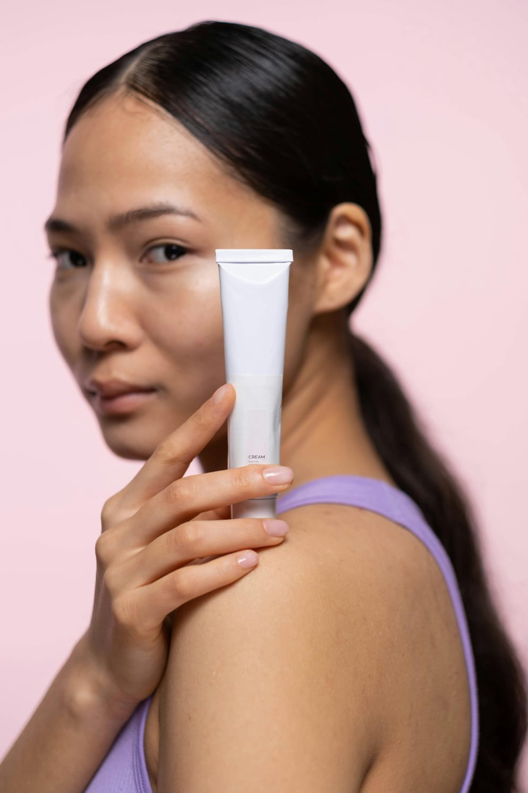

Sobre o site
🌿 Kila Glow —Kila Glow é uma comunidade digital dedicada ao autocuidado consciente, ao crescimento pessoal e à construção de uma vida mais leve, equilibrada e verdadeira.
O nome KILA nasce de quatro princípios que guiam toda a comunidade:
K — Know Yourself Conhecer a si mesma é o primeiro passo para qualquer transformação real. Em Kila Glow, acreditamos que o autocuidado começa quando aprendemos a ouvir nossos sentimentos, limites e sonhos.
I — Inspire Cada pessoa carrega uma luz única capaz de inspirar outras. A comunidade existe para compartilhar experiências, incentivar hábitos saudáveis e lembrar que ninguém precisa crescer sozinho.
L — Love O amor aqui começa dentro. Amor próprio, respeito, gentileza e cuidado são valores essenciais que fortalecem autoestima, relações e propósito de vida.
A — Act Autoconhecimento sem ação não gera mudança. Por isso, Kila Glow incentiva pequenas atitudes diárias que transformam rotina em bem-estar: cuidar da mente, do corpo e da alma.
--- ✨ Como tudo começou
A ideia do Kila Glow surgiu de um sentimento simples:
muitas pessoas buscavam melhorar a vida, mas não sabiam por onde começar. Entre estudos, rotina corrida e pressões sociais, o autocuidado acabava sendo visto como luxo
— quando, na verdade, deveria ser parte natural do dia a dia. Assim nasceu a comunidade: um espaço seguro, acolhedor e positivo, criado para reunir pessoas que desejam crescer juntas, compartilhar aprendizados e desenvolver hábitos que tragam equilíbrio emocional, paz interior e confiança. Sem perfeição. Sem cobranças irreais. Apenas progresso, autenticidade e luz.
--- 🌸 O propósito
Kila Glow existe para lembrar que:
autocuidado não é egoísmo
descansar também é produtividade
crescer leva tempo
e brilhar começa de dentro para fora
Mais do que um site, Kila Glow é um movimento de pessoas que escolheram viver com intenção, gentileza e consciência.
Kila Glow — Know Yourself. Inspire. Love. Act

Entre em Contato